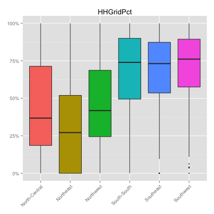
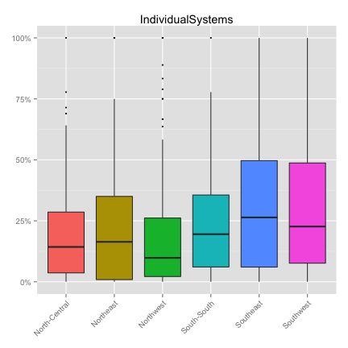

- Localities Survey, coverage
- Other surveys, what data is included
- LGA wides summaries of data
- Katsina -- 4 LGA example of detailed demand analysis
NMIS Energy Data Overview
Data Team, Modi Research Group
Outline
Coverage of localities survey (1)

Coverage of localities survey (2)
Household aggregate -- taking the mid-points of the bin vs. population of LGA


CAVEAT TO THE REST OF THE PRESENTATION: BASED ON QUESTIONABLE COVERAGE.
What % of localities have grid?


What % of households have grid?
 
What % of localities say the grid is functional?

What is the major problem?


What % of localities have a mini-grid?
 
What % of mini-grids are functional?